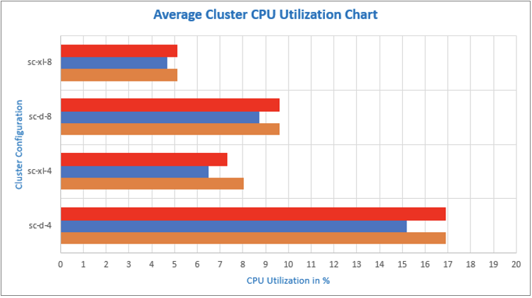
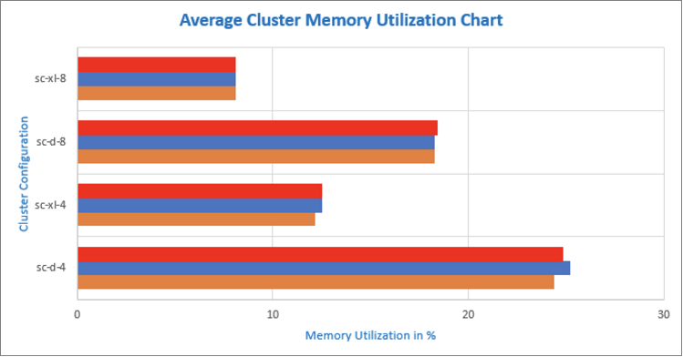

Deep Security Smart Check Deployment Guide
Deep Security™ Smart Check is a container image scanner from Trend Micro™. This guide describes how Smart Check works and how to use the Smart Check console. It contains:
About Deep Security Smart Check
Deep Security™ Smart Check performs pre-runtime scans of Docker™ images, enabling you to fix issues before they reach the orchestration environment (for example, Kubernetes®). Deep Security Smart Check provides the ability to:
- detect OS-level and application-level vulnerabilities
- detect malware
- detect secrets and keys embedded in your applications
- perform custom scan queries to find suspicious or unwanted files
- check image content against a compliance checklist that includes items from PCI-DSS, HIPAA, and NIST 800-190.
Deep Security Smart Check receives up-to-date threat data from private Trend Micro endpoints. Smart Check obtains malware information from the Trend Micro Smart Protection Network™ and detects threats using Trend Micro XGen™ machine learning algorithms. Deep Security Smart Check will find vulnerabilities in these Linux® distributions:
- Red Hat® Enterprise Linux™
- CentOS™
- Oracle® Linux
- Ubuntu®
- Debian®
- Alpine™
- Amazon™ Linux 2018.03 and Amazon Linux 2
How does Smart Check fit into a DevOps pipeline?
Deep Security Smart Check provides a valuable step in your continuous integration (CI) or continuous delivery (CD) pipeline.
For example, Jenkins® projects can automatically build, test, and then push Docker images to a Docker registry. Once pushed, the image may be instantly available to run in an orchestration environment. If malware or vulnerabilities exist in the image, then they become a risk when the image is run. Since images are intended to be immutable, the right time to scan the image is when it's first pushed to the registry.
That’s where Deep Security Smart Check fits in – it can scan Docker images in any registry that implements the Docker Registry V2 API. All Deep Security Smart Check operations are available through a documented collection of APIs to simplify integration into your CI/CD pipeline. Deep Security Smart Check APIs can be invoked automatically by your CI/CD system to start scans when an image is pushed to a Docker registry. Scan results are also available through the API. You can also scan images before they reach your production registry (see Configure pre registry scanning in the Smart Check wiki).
The Smart Check API includes a web hook facility that allows CI/CD components to register to receive notifications of scan events, including ‘scan-completed’, allowing you to automate workflows. For example, a Docker image signing service could register to receive scan results and then use those results to decide whether a particular image should be digitally signed and promoted to a “blessed” repository that is available to your orchestration environment. You could also set a web hook to call a receiver service that forwards scan results to a Slack™ channel or ServiceNow™ account.
Deep Security Smart Check also includes an administrator console that provides:
- a dashboard (system-wide summary of scan information, including metrics)
- user management
- registry configuration
- access to scan results
- scan history
- content rule customization
Supported registries
Deep Security Smart Check supports scanning Docker images in any registry that supports the Docker Registry V2 API and allows catalog listing. Tested registries include:
- Docker Trusted Registry (DTR)
- Google Container Registry (GCR)
- Amazon™ Elastic Container Registry (ECR)
- Azure™ Container Registry (ACR)
- VMware® Harbor
- jFrog™ Artifactory
- Sonatype Nexus™
- Quay™ Container Registry
Note: Deep Security Smart Check requires a TLS connection to the registry.
To integrate Deep Security Smart Check into your pipeline, you may need to write integration logic to trigger scanning based on the event model of your registry. For example, Google Container Registry uses a pub/sub model to publish events about registry activity and Docker Trusted Registry uses a web hook model. If you use Jenkins, you can use the Deep Security Smart Check plugin for Jenkins for easy integration into your pipeline. You can also use our GitHub Action directly to integrate Smart Check into your CI workflows. See Deep Security Smart Check Scan Action for details.
System requirements
This release of Deep Security Smart Check requires:
- Kubernetes 1.10.0 or greater on a Kubernetes Certified platform (or equivalent). See https://www.cncf.io/certification/software-conformance/
- Helm/Tiller 2.14.1 or greater
- Google Chrome™ browser to access the Smart Check administrator console. Other modern browsers may work with Smart Check but are not officially supported.
Deep Security Smart Check is tested with Google Kubernetes Engine, using the following resource allocations:
- 1 manager node and 4 worker nodes
- Each node is an "n1-standard-2" machine type, with:
- 2 vCPUs
- 5 GB RAM
By default, Deep Security Smart Check requires an 8 GB persistent volume when using the built-in database. If you install using an external database, Deep Security Smart Check does not require any persistent volumes.
You can also run Smart Check on AWS Outposts.
For additional information about scaling and sizing your Smart Check cluster, see Sizing guidelines
Install Deep Security Smart Check
Deep Security Smart Check is supported on the Kubernetes platform and uses the Helm package manager for Kubernetes. You must have a running Kubernetes cluster in order to deploy Smart Check.
See the Deep Security Smart Check readme for up-to-date instructions on how to install Deep Security Smart Check: https://github.com/deep-security/smartcheck-helm. By default, the Helm deployment retrieves the Smart Check Docker images from DockerHub: https://hub.docker.com/r/deepsecurity/.
At the end of the install, you’ll see commands that enable you to get the URL of the Smart Check administrator console and to get the initial administrator user name and password. The commands are also provided in the sections below.
Get the URL of the Smart Check administrator console
To get the URL of the Smart Check administrator console, configure kubectl with your cluster credentials and run these commands:
$ export SERVICE_IP=$(kubectl get svc proxy –o jsonpath='{.status.loadBalancer.ingress[0].ip}')
$ echo https://$SERVICE_IP:443
Get the initial administrator user name and password
To get the user name and password that you will use to log in to the Smart Check application for the first time, configure kubectl with your cluster credentials and run these commands:
$ echo Username: $(kubectl get secrets -o jsonpath='{ .data.userName }' deepsecurity-smartcheck-auth | base64 --decode)
$ echo Password: $(kubectl get secrets -o jsonpath='{ .data.password }' deepsecurity-smartcheck-auth | base64 --decode)
Allow inbound and outbound connections
If you are using an HTTP proxy, Smart Check requires that you open one inbound port for HTTPS access to the proxy service. Details for determining the port information are provided during the Smart Check installation.
Smart Check also requires outbound access to these hosts over HTTPS (port 443):
- Vulnerabilities: dstf.trendmicro.com:443
- License server: licenseupdate.trendmicro.com:443
- Trend Micro Smart Protection Network: *.trx.trendmicro.com:443
- Trend Micro Smart Scan Service: *.icrc.trendmicro.com:443
- Malware patterns: ipv6-iaus.trendmicro.com:443
- Target registries (for example, GCR, on-premises DTR, ECR, etc.). Note that registries must support TLS for Deep Security Smart Check to connect to them.
- Web hook targets
- Identity provider for metadata if you have configured SAML for single sign-on
- Telemetry: telemetry.deepsecurity.trendmicro.com:443
First steps after installation
After installing Smart Check:
- Log in to the Smart Check administrator console
- Configure Smart Check users
- Add or edit a registry
- Start a scan
Log in to the Smart Check administrator console
- Go to the URL provided at the end of the installation. If you don’t have the URL, see Get the URL of the Smart Check administrator console.
- Enter the initial administrator username and password and click LOGIN. If you don't have the user credentials, see Get the initial administrator user name and password.
The Deep Security Smart Check administrator console appears.
The first time you log in, you are prompted to change the password for the default administrator.
Configure Smart Check users
Deep Security Smart Check has a default administrator account, but you can add other user accounts.
Tip: You can also enable SAML single sign-on in Deep Security Smart Check, so that users in your organization can sign in to Smart Check with their existing organization account. You can also use your identity provider to implement user authentication access control features like password strength or change enforcement, one-time passwords (OTP), and two-factor or multi-factor authentication (2FA / MFA). For instructions, see Implement SAML single sign-on on the Smart Check helm wiki.
Add or edit a user
- On the left side of the Smart Check administrator console, click Users.
- On the Users page, click + CREATE to add a user or click an existing user to edit.
- On the Add/Edit User page, enter the User ID that the user will use to log in to Deep Security Smart Check. The User ID has a maximum of 64 characters.
- Enter the user’s full name.
- Enter a password and confirm the password.
- We recommend that you select Require user to change password on next login when adding a new user.
- Select a role to assign to the user. Smart Check has three types of roles:
- Administrator: Full control
- User: Can request scans and has read-only access to users, roles, registries, content rules, identity providers, and overrides.
- Auditor: Read-only access
- Click SAVE.
Delete a user
- On the left side of the Smart Check administrator console, click Users.
- On the Users page, click the user you want to remove.
- On the Edit User page, click DELETE.
Note: You must have at least one user with the administrator role. If you have only one administrator, you cannot delete that user until you add another administrator.
Add or edit a registry
Before Smart Check can scan your images, it needs to know which registries contain the images that you want to scan. You can add one or more registries (up to a maximum of 4 with a trial or basic license) to Deep Security Smart Check.
Before adding a registry
When you add a registry, you must provide authentication credentials that Deep Security Smart Check will use to access your repository. Depending on the type of registry, you can provide AWS credentials, a username and password, or a JSON key file.
If you are using Google Cloud Registry, create a service account and use its JSON key file. The service account must have at least the Storage Object Viewer role and both the Google Cloud Resource Manager API and Google Container Registry API must be enabled. Google provides an overview and detailed instructions for creating service accounts.
Add a registry
- On the left side of the Smart Check administrator console, click Registries.
- Click + CREATE to add a registry.
- On the Create Registry page, in the Name field, enter a descriptive name for the registry. This name does not necessarily need to match the namespace of your Docker registry. If you plan to add multiple registries, you’ll use this name to tell them apart in the Smart Check administrator console. The name should be short but meaningful, with a maximum of 256 characters.
- In the Description field, enter an optional description of the registry. This is useful if you need to capture a bit more information than the Name field allows.
- In the Registry Type field, select the type of registry you're adding:
- Google Cloud Registry
- Amazon Elastic Cloud Registry
- Generic Registry
- For a Google Cloud Registry, enter:
- Registry Host: Hostname or IP address of the Docker registry you want to scan
- JSON key file: JSON key that Smart Check will use to access your repository
- For an Amazon Elastic Cloud Registry, enter:
- Region: AWS region identifier where your registry it located
- Registry ID: (Optional) If you want to scan a registry in another account, enter the account ID here. If you do not specify an account, Smart Check will use the default registry.
- Use cross-account role: Select this option if you want to scan a registry in another account.
- Authentication method: Select either Instance Role or Access Key ID & Secret. Specifying access keys is discouraged because the keys need to be updated periodically (for security reasons), which creates management overhead.
- For a Generic Registry, enter:
- Registry Host: Hostname or IP address of the Docker registry you want to scan
- Registry User: Username that Smart Check will use to access your repository
- Password: Password that Smart Check will use to access your repository
- HTTPS Configuration:
- Skip registry certificate validation (insecure): By default, Smart Check validates the TLS certificate associated with your registry. This validation requires that Smart Check trust the certificate of the CA that issued the registry certificate. If you don’t have the CA certificate, you can select Skip registry certificate validation (insecure).
- Trust: Deep Security Smart Check has a built-in set of certificate authorities that it trusts. If your registry has a certificate that was issued by a well-known certificate authority, then you should not need to do anything for Smart Check to trust your registry. If the registry certificate was issued by a private certificate authority, you can upload the certificate authority's certificate (.pem file).
- If Start scan when registry is created is selected, a scan starts as soon as you click Create Registry.
- If Perform scan periodically is selected, Smart Check automatically performs a scan every day at midnight UTC.
- Click + ADD FILTER to include or exclude images based on any segment of their fully qualified name in the form
<repository>/<image>:<tag>. For example, the include filter*latest*would matchsmartcheck/scan:latestandsmartcheck/auth:latest. The default include filter of*will select all images in the registry. - Click CREATE REGISTRY.
To edit a registry, go to the Registries page, click the registry, and then click .
To refresh the list of images in a registry, go to the Registries page, click the registry, and then click .
Start a scan
When Smart Check receives a scan request, it pulls the image(s) specified in the registry being scanned, unpacks each layer, and inspects the content for malware, vulnerabilities, secrets and keys, and compliance problems.
There are several ways that a scan can be triggered:
- Smart Check automatically starts a scan at midnight UTC for all registries that have been created with the Perform scan periodically option selected.
- You can manually start a scan by clicking the Scan Now button. (Instructions are below)
- You can start a scan through the Smart Check API. You can access the API documentation from the menu in the Smart Check administrator console.
Manually start a scan
- In the Registries section of the Dashboard page or on the Registries page, click the name of the registry that you want to scan.
- Click .
- A confirmation message appears. Click OK.
To confirm that scans are running, on the left side of the Smart Check administrator console, click Scans. Running scans have a spinning icon next to them.
See scan results
There are several ways to get scan results:
- You can add a web hook through the Smart Check API with a destination URL that is called automatically when results are ready. See the API documentation for details. Your web hook receiver could, for example, process the scan result and forward a notification to Slack or ServiceNow if appropriate.
- You can request the results directly through the Smart Check API. For details, refer to the API documentation.
- You can check the scan results in the Smart Check administrator console:
In the Registries section of the Dashboard page or on the Registries page, click the registry. You’ll see a summary that includes information about the findings from the latest scan.
You'll also see a searchable list of images in the registry. To see specific information about an individual image, click the image to display its scan history. Click a scan to display information about it.
Add custom content rules
Deep Security Smart Check ships with a built-in collection of rules that detect some common items that should never be included in images. You can also write your own rules, using the YARA language. For information on writing rules, see Create custom content rules in the Smart Check wiki.
Individual rules are bundled into rulesets, and rulesets are grouped in collections. Deep Security Smart Check can have only one active collection at a time, so you can either add new rulesets to the default Deep Security Smart Check Collection, or create a new collection to use instead. Within a collection, you can enable or disable individual rulesets.
You can use the API or the UI to manage collections and rulesets. The UI is described in the following sections.
Create a new content ruleset collection
If you don't want to use the built-in Deep Security Smart Check Collection, you can make your own collection.
- On the left side of the Smart Check administrator console, click Content Rules.
- On the Content Rules page, click + CREATE
- In the pop-up that appears, enter a name for the new collection and click ADD. A new, empty ruleset collection appears on the Content Rules page.
- Add some rulesets to the collection, and enable those rulesets
- When you're ready to being using the new collection, click to activate the collection. This also deactivates any other collections.
Change the name of a content ruleset collection
- On the Content Rules page, click for the ruleset collection that you want to rename.
- In the pop-up that appears, edit the name and click UPDATE.
Add rulesets to a collection
- On Content Rules page, click in the ruleset collection where you want to add the ruleset.
- In the pop-up that appears:
- Enter a name for the ruleset.
- The ruleset is enabled by default, or you can slide the toggle to disable it.
- Add the rule files by dragging and dropping them or clicking in the area provided. Files can be a maximum of 8 KB.
- Click ADD.
Access the API documentation
Everything you can do in the Smart Check administrator console (and more) is available as an API operation. You can use the API and web hooks to integrate Deep Security Smart Check with a variety of other products.
You can find the API documentation in the Smart Check administrator console. On the left side of the console, click API Documentation.
Or go to https://deep-security.github.io/smartcheck-docs/api/index.html.
Frequently asked questions
Does Smart Check only find vulnerabilities in packages that are installed with a package manager?
Smart Check scans both the installed package list as well as a set of applications commonly installed by copying them directly to the file system. Our labs team provides an active feed with up-to-date information about the supported applications.
Does Smart Check get automatic security updates, or do I need to upgrade to get security updates?
Deep Security Smart Check updates its malware details and vulnerability definitions automatically. You will need to upgrade to get software updates, including new feature and security updates.
How do I scan images before they reach my production registry?
See Configure pre registry scanning in the Smart Check wiki for instructions.
How do I override a vulnerability or content scan finding?
If a scan finds a vulnerability or content scan issue but you know it's not a concern, you can override it using the Smart Check API. For details, see the Overrides section of the API.
How do I check whether images meet common PCI-DSS compliance requirements?
You can use the checklist feature in the Smart Check API to verify whether a scanned image complies with common PCI requirements. The checklist feature is currently supported for CentOS and Red Hat images only. For details, see the Scans section of the API.
How do I use an external database with Smart Check?
By default, Deep Security Smart Check configures a database pod in your Kubernetes cluster. This is convenient for demonstration purposes, but for production you should use an external database. For instructions, see Use an external database in the Smart Check wiki.
How do I replace the self-signed Smart Check service certificate?
See Replace the service certificate in the Smart Check wiki for instructions.
How do I secure Smart Check web hooks?
See Secure web hooks in the Smart Check wiki for instructions.
I'm locked out! How do I recover my administrator account?
See Recreate an administrator user in the Smart Check wiki for instructions.
Run Smart Check on AWS Outposts
AWS Outposts enables you to run an AWS environment in a datacenter or other on-premises location. You can deploy Smart Check on an EKS cluster running on AWS Outposts, using either a built-in database (for testing) or an external RDS instance that's running on AWS Outposts (for production). Smart Check on AWS Outposts is identical to Smart Check in the AWS cloud environment. Smart Check does not currently support high availability.
Sizing guidelines
This section provides guidance on sizing your Smart Check cluster. Smart Check can be scaled either vertically (adding more CPU and memory) or horizontally (adding more worker-nodes to the cluster).
Summary and recommendations
Our testing revealed that scaling vertically produces faster scan rates than scaling horizontally. For example, deploying Deep Security Smart Check using 4 worker-nodes of m5a-xlarge instances resulted in a faster scan rate than using 8 worker-nodes of m5-large instances.
To get the best performance per dollar spent, we recommend that you scale your pods until you see a high CPU or memory utilization (See Scale Smart Check pods). As shown in Pod scaling results, we found that CPU utilization will cap before memory does, so you might consider increasing the CPUs in a custom EC2 instance, rather than just upgrading from m5-large to m5a-xlarge (which would increase both CPUs and memory).
We also tested Smart Check with Amazon RDS to identify the impact that Smart Check has on database resources. Our testing showed that there is no major impact on the RDS database during scans.
Details about how we reached these conclusions are provided below.
Details
This section provides details on how we reached the conclusions in the "Summary and recommendations" section.
Test environment
Cluster configuration
We used these cluster configurations for our testing:
| Cluster configuration | Cluster name | Nodes | Instance type | Total vCPUs in cluster | Total memory in cluster |
|---|---|---|---|---|---|
| Baseline configuration | sc-d-4 | 4 | m5-large (2 CPU, 8 GB) | 8 | 32 GB |
| Horizontal scaling | sc-d-8 | 8 | m5-large (2 CPU, 8 GB) | 16 | 64 GB |
| Vertical scaling | sc-xl-4 | 4 | m5a-xlarge (4 CPU, 16 GB) | 16 | 64 GB |
| Horizontal and vertical scaling | sc-xl-8 | 8 | m5a-xlarge (4 CPU, 16 GB) | 32 | 128 GB |
Because AWS instance types may change over time, here are the specifications for m5-large and m5a-xlarge instances at the time of our testing:
| Specification | m5-large | m5a-xlarge |
|---|---|---|
| Processor type | 1st or 2nd generation Intel Xeon Platinum 8000 series | AMD EPYC 7000 series |
| Clock speed | Turbo Clock speed upto 3.1 GHz | Turbo Clock speed upto 2.5 GHz |
| Advanced Vector Extension Support | Yes. 512 (AVX-512) instruction set. Two times FLOPS per core compared to m4 instances. | No |
| Memory | 8 GB | 16 GB |
| Instance Storage | EBS-only | EBS-only |
| Network Bandwidth | Up to 10 Gbps | Up to 10 Gbps |
| EBS Bandwidth | Up to 4750 Mbps | Up to 2880 Mbps |
Registry configuration
We used this registry configuration for our testing:
| Registry size | Total images | Average image size |
|---|---|---|
| 11.949 GB | 43 | 284.5 MB |
Database configuration
We used a t2.small RDS instance for each of the EKS instances, and our testing showed that there is no major impact on the RDS database during scans.
Because Amazon RDS types may change over time, here are the specifications for a t2.small instance at the time of our testing:
- Core: 1
- vCPU: 1
- CPU credits/hour: 12
- Memory: 2 GB
- Network performance (Gbps): Low to moderate
Cluster resource utilization
 Scale Smart Check pods
You can use the overrides.yaml file to specify the replica count for each pod:
- Add the following snippet to your
overrides.yamlfile:replicas
malwareScan: 5
scan: 5
imageScan: 5
vulnerabilityScan: 5
contentScan: 5 - Then, in your terminal, run:
helm upgrade --values /path/to/overrides.yaml <release-name> /path/to/smartcheck-helm/
Using our default configuration (m5.large with 4 nodes), scaling each pod to a replica count of 5 resulted in an average CPU utilization of approximately 72%. That means you could potentially configure a replica count higher than 5.
Scaling the pods linearly (all counts at 5 instead of different numbers) is a good approach if you’re not sure what kind of content findings your images typically have. But, for example, if your content findings consist mostly of malware, you could scale your malware pod's replica count to a larger number.
Tip: If the vulnerability scan pods become evicted, it’s usually because there is not enough room for them on the disk. To allocate more space for them, add the following to overrides.yaml:
vulnerabilityScan:
workVolume:
## The amount of space to request for the vulnerability scan working volume
##
## Default value: 3Gi
sizeLimit: 4Gi
Pod scaling results
This section details our test results with caching disabled. By default, caching is enabled for Smart Check, so actual performance in most environments should be higher than this.
In the results below, R1, R2, R3 are replica counts.
Each scan was pushed 10 times (10 iterations with one hour break). The results were:
- sc-d-4: Scan rate for R3 is 130% faster than R1, and R5 is 152% faster than R1
- sc-d-8: Scan rate for R3 is 135% faster than R1, and R5 is 237% faster than R1
- sc-xl-4: Scan rate for R3 is 82% faster than R1, and R5 is 144% faster than R1
- sc-xl-8: Scan rate for R3 is 90% faster than R1, and R5 is 161% faster than R1
Assuming R1 (replica count of 1) is the baseline (i.e. improvement factor 1:1 if comparing it to itself):
- Scaling to R3 provides an improvement factor of at least 1.82 times to 2.3 when compared to R1.
- Scaling to R5 provides an improvement factor of a least 2.44 to 3.37 when compared to R1.
When we increased the pod replica count within the same cluster configuration, we saw significant improvement to the scan rate while using very little additional resources (CPU and memory).